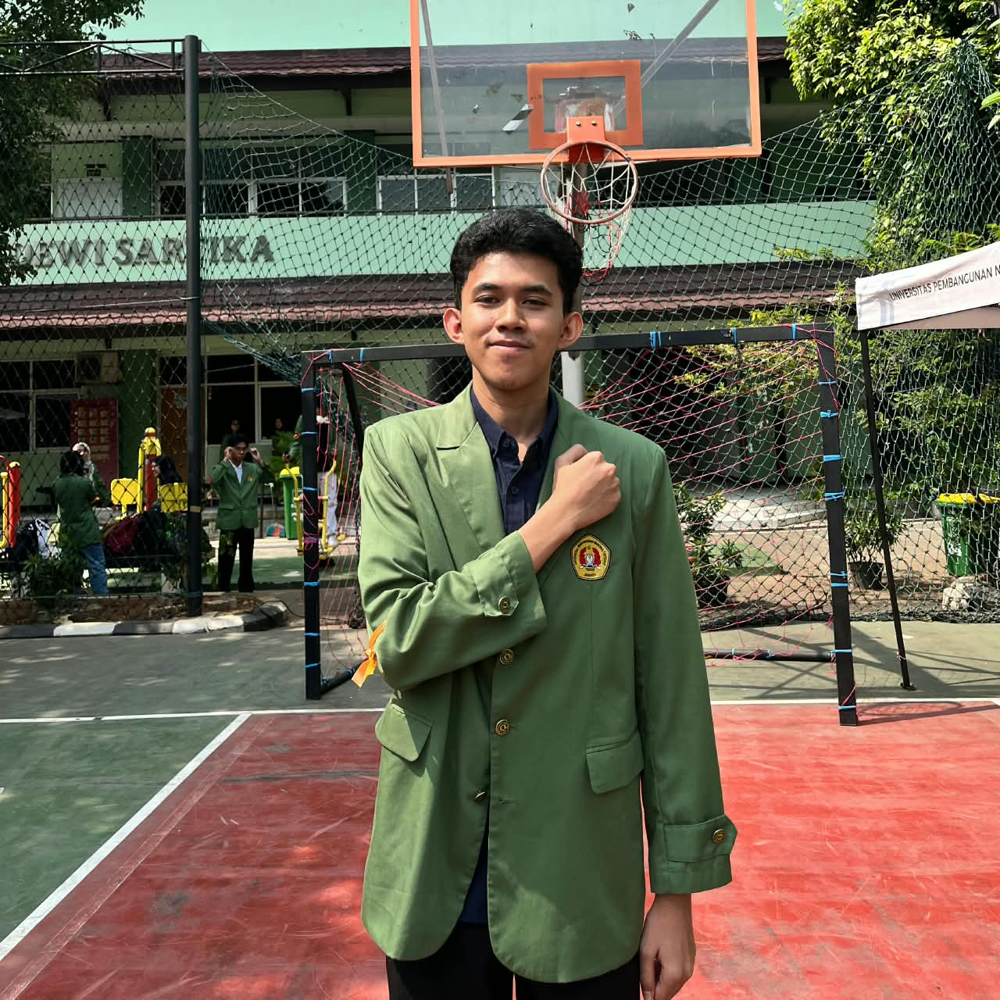
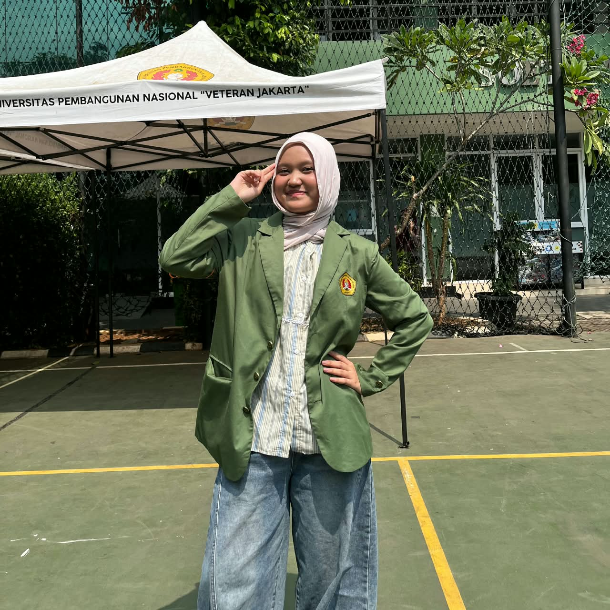
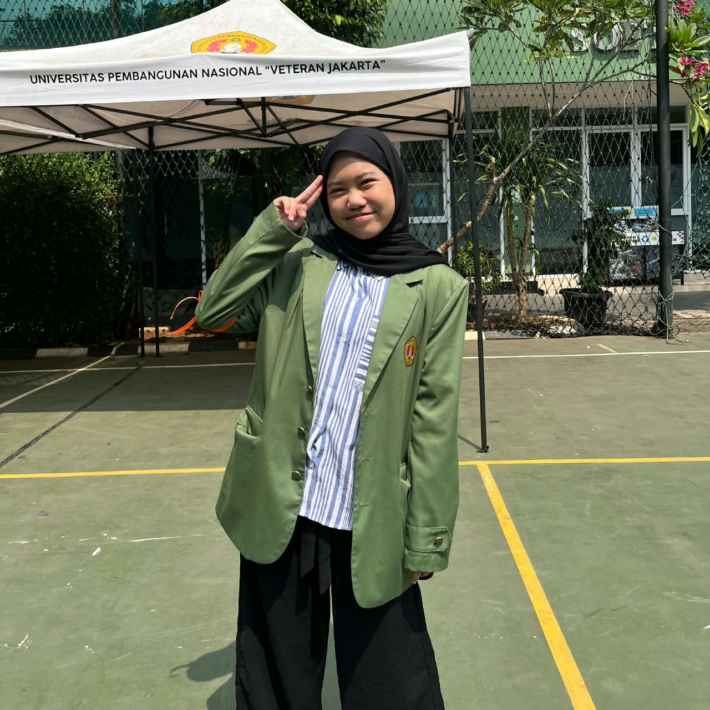
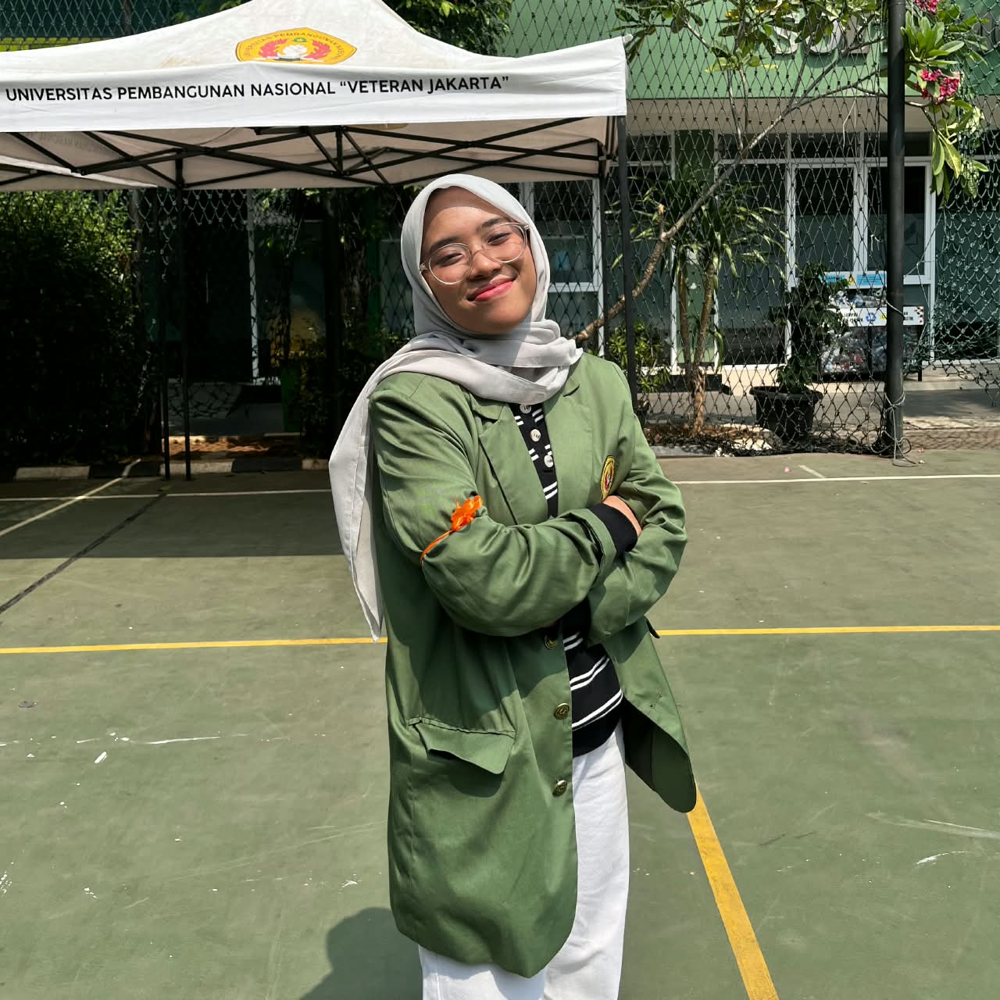
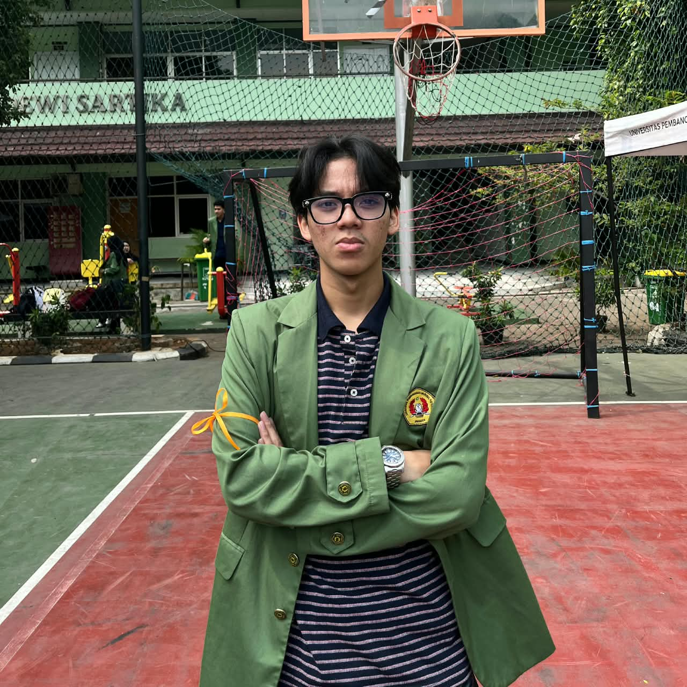
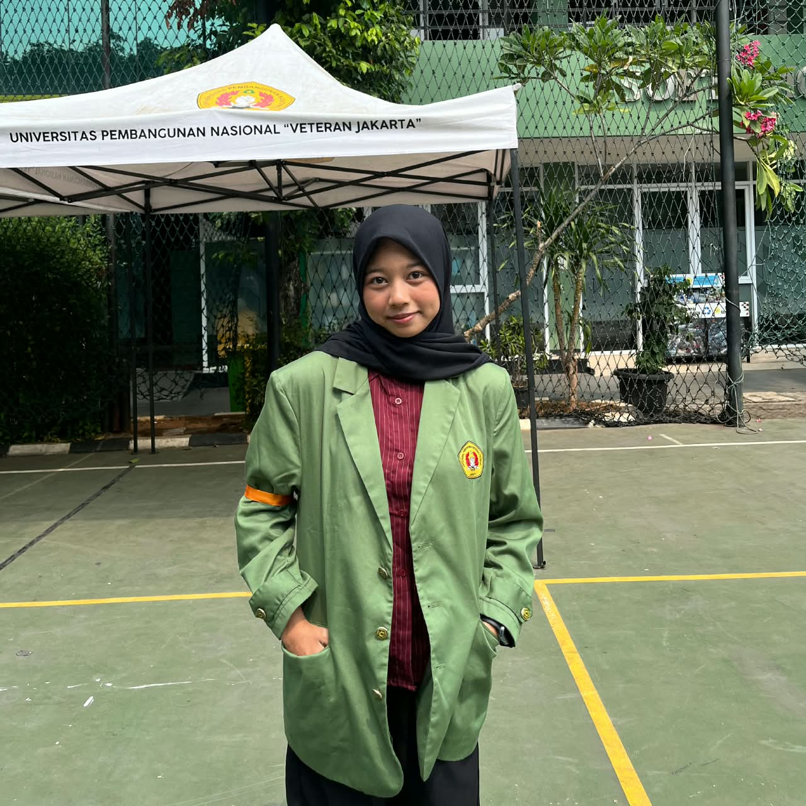
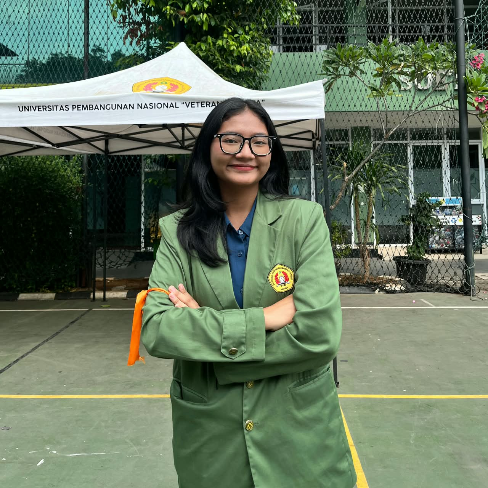
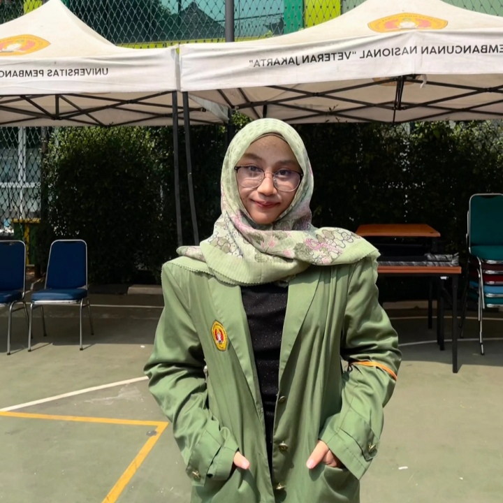
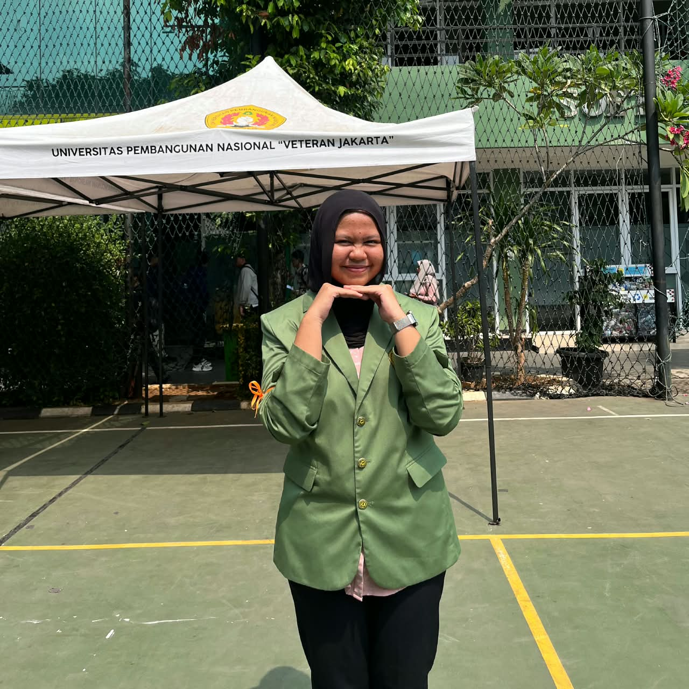

PENDAHULUAN
Latar Belakang & Konsep Lintas Batas
Merantau merupakan keputusan strategis untuk meninggalkan daerah asal demi menjalani kehidupan di tempat baru dengan tujuan menempuh pendidikan tinggi. Bagi mahasiswa perantau di UPN "Veteran" Jakarta, merantau bukan sekadar perpindahan fisik secara geografis, melainkan awal dari transformasi sosial dan budaya. Secara sosiologis, merantau mengonstruksi makna baru dalam proses pendewasaan, di mana seseorang dituntut membangun identitas dan kemandirian di tengah zona yang sepenuhnya asing (Marta, 2014).
Keputusan merantau dilatarbelakangi oleh berbagai dorongan emosional dan rasional, mulai dari cita-cita meraih pendidikan unggul, mencari pengalaman baru, hingga mengasah kemandirian hidup tanpa ketergantungan pada orang tua. Namun, saat menjejakkan kaki di tanah perantauan seperti Jabodetabek, mahasiswa langsung diperhadapkan pada dinamika culture shock, tantangan ekonomi, perbedaan dialek bahasa, serta ritme kehidupan ibu kota yang serba cepat. Fenomena ini memperlihatkan bahwa perjuangan anak rantau tidak hanya berpusat pada tuntutan akademik, melainkan juga pada ketahanan mental dan adaptasi sosial di lingkungan baru (Redaksi Media, 2026; Agnecia, 2026).
Dalam konteks proyek ini, istilah "lintas batas" melampaui sekat wilayah administratif semata. Batas yang dimaksud mencakup keberanian emosional mahasiswa untuk melangkah keluar dari zona nyaman dan melepaskan kebiasaan lama di kampung halaman. Keberhasilan mahasiswa bertahan di perantauan dipengaruhi oleh kesejahteraan subjektif (subjective well-being), yang ditopang oleh nilai amanah serta hadirnya dukungan sosial dari lingkungan kampus (Hasibuan et al., 2018). Lebih jauh lagi, perjalanan merantau menyimpan potensi sosial-ekonomi jangka panjang, di mana pengalaman dan wawasan dari perantauan kelak dapat dibawa pulang untuk menggerakkan serta membangun ekonomi daerah asal (Solidaritas Desa Indonesia, 2026).
"Melalui tema 'Suara Jiwa dari Lintas Batas', artikel ini menjadi wadah narasi humanis yang jujur. Di balik riuhnya perkuliahan, ada cerita kerinduan, keteguhan batin, serta perjuangan tak terlihat dari mahasiswa yang bertarung jauh dari rumah."
Melalui tema "Suara Jiwa dari Lintas Batas", artikel ini mengkaji secara mendalam pengalaman adaptasi mahasiswa perantau UPNVJ dari perspektif Mata Kuliah Wajib Kurikulum (MKWK). Pembahasan difokuskan pada bagaimana nilai-nilai Pendidikan Agama, Kebhinekaan Pancasila, dan Kewarganegaraan (Bela Negara) diintegrasikan sebagai pilar resiliensi mahasiswa dalam menghadapi berbagai tantangan selama jauh dari rumah.
Dua Ujung Nusantara di UPNVJ
Klik tab daerah untuk melihat perbedaan latar belakang narasumber
METODE PELAKSANAAN
Pendekatan & Subjek Penelitian Kualitatif
Penelitian dan penyusunan proyek PjBL ini menggunakan pendekatan kualitatif deskriptif guna menangkap narasi pengalaman serta pemaknaan subjektif mahasiswa perantau secara mendalam. Data primer diperoleh melalui teknik wawancara mendalam (in-depth interview) yang dilaksanakan bersama dua narasumber mahasiswa perantau UPN "Veteran" Jakarta dari Program Studi S1 Sistem Informasi. Narasumber pertama adalah Irfan Dizhwar Tsani (NIM 2610512011) yang berasal dari Bukittinggi, Sumatera Barat (alumni SMA Negeri 2 Bukittinggi). Narasumber kedua adalah Carmellio Wilman Grendy (NIM 2610512029) yang berasal dari Kupang, Nusa Tenggara Timur (alumni SMA Negeri 1 Kupang Timur).
Data sekunder dihimpun melalui studi pustaka terhadap jurnal bereputasi bidang sosiologi dan psikologi, modul MKWK, serta artikel reflektif relevan (Marta, 2014; Hasibuan et al., 2018; Redaksi Media, 2026). Keseluruhan data naratif yang diperoleh dari hasil wawancara kemudian diolah melalui tahapan reduksi data, penyajian narasi deskriptif, serta analisis sintesis dengan mengaitkan pengalaman nyata narasumber pada tiga pilar utama MKWK, yaitu Pendidikan Agama, Pancasila, dan Kewarganegaraan/Bela Negara.
Tokoh "Suara Jiwa"
Klik atau sentuh kartu untuk membaca profil dan refleksi narasumber
Irfan Dizhwar Tsani
Mahasiswa Rantau Asal Minang
Motivasi: Ingin mandiri & belajar mengelola hidup tanpa bergantung orang tua.
Tantangan: Penyesuaian biaya hidup Jakarta & kultur.
"Awalnya sempat kepikiran bakal dikucilkan karena dari luar Jawa. Tapi temen-temen sekelas justru langsung ngajak ngobrol, main, dan diskusi bareng. Lingkungan kampus ternyata ramah banget."
Carmellio Wilman Grendy
Mahasiswa Rantau Asal NTT
Motivasi: Keluar dari zona nyaman demi ilmu & jaringan di Jakarta.
Tantangan: Ritme hidup cepat, logat bicara, & homesickness.
"Pas lagi down atau kangen rumah, ibadah dan doa jadi pegangan utama. Saya bawa nilai-nilai iman dari kampung halaman biar tetep fokus sama tujuan perkuliahan."
HASIL DAN CAPAIAN
Dinamika Adaptasi & Integrasi Nilai MKWK
Proses adaptasi mahasiswa perantau di UPN "Veteran" Jakarta diwarnai oleh berbagai dinamika kejutan budaya (culture shock) dan penyesuaian gaya hidup. Irfan Dizhwar Tsani mengungkapkan bahwa motivasi utamanya merantau adalah keinginan kuat untuk belajar hidup mandiri dan mengelola diri sendiri tanpa bergantung pada orang tua. Namun, setibanya di Jakarta, ia merasakan perbedaan pergaulan sosial yang jauh lebih terbuka dan eksploratif dibandingkan lingkungan tempat tinggalnya di Sumatera Barat. Selain perbedaan budaya, Irfan juga menggarisbawahi tantangan ekonomi, di mana biaya kos dan pengeluaran harian di Jakarta menuntut kemampuan pengelolaan finansial yang ekstra ketat.
Tantangan serupa dialami oleh Carmellio Wilman Grendy yang memilih merantau dari Kupang ke Jakarta demi mencari lingkungan perkuliahan PTN yang kompetitif, memperluas relasi, serta keluar dari zona nyaman. Bagi Grendy, tantangan terberat terletak pada ritme kehidupan Jakarta yang sangat cepat serta hambatan berkomunikasi. Dialek dan logat khas NTT yang dimilikinya sering kali membuat teman-teman sekelasnya bingung, sehingga ia harus secara bertahap menyesuaikan gaya bicaranya agar dapat berbaur dengan lancar. Pengalaman Irfan dan Grendy ini menegaskan bahwa rasa rindu rumah (homesickness), cemas akan biaya hidup, serta adaptasi bahasa merupakan ujian nyata bagi ketahanan mental mahasiswa perantau (Redaksi Media, 2026; Agnecia, 2026).
Di tengah berbagai tekanan tersebut, internalisasi nilai-nilai MKWK terbukti menjadi fondasi utama resiliensi para mahasiswa perantau. Dalam unsur Pendidikan Agama, nilai spiritualitas berfungsi sebagai tempat bersandar utama ketika rasa cemas, lelah, atau kesepian melanda. Irfan menuturkan bahwa ketika merasa sulit mengadu kepada orang tua di kampung halaman, ruang-ruang ibadah seperti masjid menjadi tempat utama baginya untuk menumpahkan perasaan dan berdoa. Hal senada disampaikan Grendy, di mana ibadah dan doa menjadi pegangan teguh saat mengalami homesick atau penurunan kondisi emosional. Nilai iman yang dibawanya dari rumah menjaga fokus utamanya dalam menuntut ilmu dan membentengi diri dari pengaruh pergaulan bebas. Hal ini sejalan dengan temuan Hasibuan et al. (2018), di mana sikap amanah dan nilai keagamaan meningkatkan kesejahteraan subjektif mahasiswa perantau.
Dalam unsur Pancasila dan Kebhinekaan, kedua narasumber menemukan bahwa kekhawatiran awal mereka akan diskriminasi atau pengucilan sama sekali tidak terbukti. Irfan yang awalnya ragu karena belum lancar berbahasa Indonesia justru disambut hangat oleh teman-teman sekelasnya yang aktif merangkul dan mengajaknya berdiskusi. Bagi Irfan, perbedaan suku di UPNVJ menjadi wadah memperluas wawasan dengan saling bertukar cerita budaya, bahasa daerah, dan makanan khas. Grendy pun merasakan kehangatan yang sama, di mana dosen maupun mahasiswa lokal di UPNVJ bersikap sangat inklusif dan merangkul mahasiswa dari Indonesia Timur tanpa memandang sebelah mata. Interaksi ini mencerminkan pengamalan nyata sila Persatuan Indonesia dan Kemanusiaan yang Adil dan Beradab di lingkungan kampus (Agnecia, 2026).
Sementara itu, dalam unsur Kewarganegaraan dan Bela Negara, kedua narasumber merefleksikan identitas UPNVJ sebagai Kampus Bela Negara melalui aksi nyata. Menurut Irfan dan Grendy, bela negara di era modern tidak lagi dimaknai dengan mengangkat senjata, melainkan dengan belajar giat, mengukir prestasi, dan menjadi pribadi yang bermanfaat bagi sesama. Keduanya memiliki komitmen tegas untuk membawa ilmu, pengalaman, dan pemikiran matang yang diperoleh selama berkuliah di Jakarta kembali ke daerah asal mereka, Bukittinggi dan Kupang, demi mendorong pemerataan pembangunan daerah agar tidak hanya berpusat di Pulau Jawa. Pemaknaan ini membuktikan bahwa semangat merantau mampu membentuk karakter pemuda yang mandiri, berdaya saing, dan berjiwa Bela Negara (Solidaritas Desa Indonesia, 2026).
PILAR RESILIENSI MKWK
Eksplorasi Interaktif Nilai Agama, Pancasila & Bela Negara
Doa dan aktivitas ibadah menjadi jangkar batin saat rasa cemas dan rindu keluarga melanda. Nilai kesabaran, tawakal, dan rasa syukur tidak hanya membentuk ketahanan mental individu, tetapi juga menjelma dalam sikap saling menguatkan antar-sesama anak rantau.
Perbedaan bahasa dan tradisi tidak menjadi penghalang pertemanan di UPNVJ. Keterbukaan mahasiswa lokal dalam menyambut rekan perantau membuktikan bahwa prinsip Kemanusiaan yang Adil dan Beradab serta Persatuan Indonesia dihidupi secara nyata dalam interaksi kelas sehari-hari.
Sesuai identitas UPN "Veteran" Jakarta sebagai Kampus Bela Negara, mahasiswa perantau memaknai Bela Negara lewat kesungguhan menuntut ilmu, menempa karakter mandiri, serta niat tulus untuk kembali membangun daerah asal mereka setelah lulus kelak.
KESIMPULAN & REFLEKSI
Transformasi Karakter & Pesan Inklusivitas Kampus
Pengalaman hidup sebagai minoritas kultural di tanah rantau membuka ruang refleksi yang luas mengenai pentingnya inklusivitas di lingkungan kampus. Baik Irfan maupun Grendy awalnya sempat merasakan kekhawatiran akan adanya hambatan bahasa atau potensi dikucilkan akibat perbedaan latar belakang daerah. Namun, ketakutan tersebut terpatahkan oleh kehangatan sambutan sivitas akademika UPNVJ, di mana dosen, birokrasi, serta teman-teman sekelas menunjukkan sikap terbuka, merangkul tanpa diskriminasi, dan menjunjung tinggi nilai-nilai kemanusiaan. Hal ini memberikan pesan humanis yang kuat bagi seluruh civitas akademika bahwa kampus harus terus menjadi ruang aman yang inklusif, peka terhadap kebutuhan mahasiswa luar Jawa, dan senantiasa merayakan keberagaman sebagai kekuatan bersama.
Perjalanan "suara jiwa" para mahasiswa perantau seperti Irfan dan Grendy merupakan potret nyata dari perjuangan menembus lintas batas membawa harapan keluarga, merajut mimpi di ibu kota, serta menempa diri menjadi generasi yang tangguh. Melalui nilai-nilai keagamaan yang menjadi jangkar spiritual, semangat Bhinneka Tunggal Ika yang meruntuhkan sekat-sekat perbedaan, serta pemaknaan "Bela Negara" yang diwujudkan melalui kerja keras, prestasi, dan kesungguhan dalam belajar, mereka membuktikan bahwa jarak dan perbedaan bukanlah halangan untuk bersatu.
"Sebab merantau bukan sekadar tentang meninggalkan rumah demi mengejar ijazah, melainkan tentang bagaimana kaki yang berpijak di tanah baru sanggup merajut mimpi, merawat persaudaraan lintas budaya, dan kelak kembali untuk menghidupkan asa di tanah kelahiran."
DAFTAR PUSTAKA
Referensi Akademik & Rujukan Riset PjBL
Hasibuan, M. A. I., Anindhita, N., Maulida, N. H., & Nashori, F. (2018). Hubungan antara amanah dan dukungan sosial dengan kesejahteraan subjektif mahasiswa perantau. Psikohumaniora: Jurnal Penelitian Psikologi, 3(1), 101-116.
Marta, S. (2014). Konstruksi makna budaya merantau di kalangan mahasiswa perantau. Jurnal Kajian Komunikasi, 2(1), 27-43.
Agnecia, T. (2026). Ribuan Cerita: Langkah demi Langkah Menjalani Hidup di Bandung. Kompasiana.
Redaksi Media. (2026). Mahasiswa Perantau di Tengah Tantangan Zaman: Antara Mimpi, Adaptasi, dan Ketahanan Mental. Kompasiana.
Solidaritas Desa Indonesia. (2026). Lesna Purnawan, Dari Perantauan Menggerakkan Ekonomi Wonogiri #DESASOLID. Kompasiana.
DOKUMENTASI TIM & KELOMPOK 2
Struktur Anggota Kelompok 2 & Galeri Hasil Karya PjBL

Naufal Aulia Alghifary
NIM: 2610512020
S1 Sistem Informasi • FIK UPNVJ
Divisi PDD (Publikasi, Dekorasi & Desain)

Puti Friska Najla' Aqila
NIM: 2610512007
S1 Sistem Informasi • UPNVJ

Athary Nur Sabrina
NIM: 2610512003
S1 Sistem Informasi • UPNVJ

Enita Zahirah A. G.
NIM: 2610512034
S1 Sistem Informasi • UPNVJ
Divisi Dokumenter

Djibril Maulana Ahmad
NIM: 2610512012
S1 Sistem Informasi • UPNVJ

Zahra Putri Hidayat
NIM: 2610512002
S1 Sistem Informasi • UPNVJ

Caroline Benita Danell
NIM: 2610512035
S1 Sistem Informasi • UPNVJ

Rimaira S. Margono
NIM: 2610512010
S1 Sistem Informasi • UPNVJ

Alisya Shafa Novantora
NIM: 2610512024
S1 Sistem Informasi • UPNVJ
Dokumentasi Kegiatan & Diskusi Tim
Rekaman momen kerja kelompok, wawancara, & kebersamaan Kelompok 2